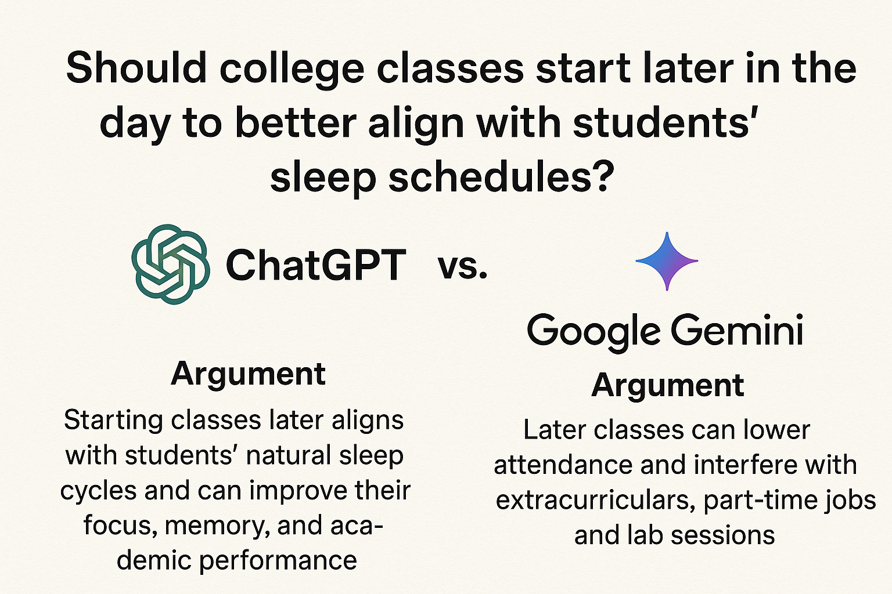

Introduction
In one of my previous blog posts, I debated ChatGPT about ideal start times for college classes. This time, I’m taking things a step further by having ChatGPT debate another language model—Google Gemini. To set up this exchange, I’ll alternate between the two models, copying and pasting each of their responses so they can directly respond to one another.
Starting Prompt
What should the starting prompt be? I decided that the prompt for this time will be the prompt from last time in order to accurately compare and contrast the quality of the argument from me versus from the LLM.
Thus, the prompt is: “Should college classes start later in the day to better align with students’ sleep schedules?” I asked this to ChatGPT first.
This was ChatGPT’s response:
Many experts and students argue that college classes should start later in the day to better align with students’ natural sleep cycles. Research shows that young adults’ circadian rhythms make it difficult for them to fall asleep early, meaning early morning classes often lead to sleep deprivation. Lack of adequate sleep can negatively affect focus, memory, and academic performance.
Starting classes later could improve students’ alertness and overall well-being, helping them engage more effectively in lectures and discussions. However, opponents note that later schedules could interfere with extracurriculars, part-time jobs, or lab sessions. Ultimately, balancing academic demands with students’ biological needs suggests that modestly later start times — such as beginning classes at 9 or 10 a.m. instead of 8 a.m. — might be a healthy compromise.
This was Gemini’s response:
There are several compelling arguments against the proposal to start college classes later in the day, especially when considering the broader implications for student life, institutional efficiency, and preparation for post-graduate careers.
⏰ Impact on Scheduling and Efficiency
Starting classes later, even by a modest amount like one or two hours (e.g., 9 or 10 a.m. instead of 8 a.m.), creates a ripple effect across the entire institutional schedule:
- Compressed Class Day: A later start pushes all subsequent classes, seminars, and lectures later into the evening. This makes it challenging to schedule the required number of courses and utilize the full potential of campus facilities, especially for large universities that already struggle with classroom availability.
- Conflict with Evening Activities: Later class schedules will inevitably interfere more significantly with evening activities. These include:
- Extracurricular Activities and Clubs: Many student organizations, including debate teams, student government, and cultural groups, meet in the late afternoon or early evening.
- Athletics and Practices: Varsity and club sports need consistent afternoon practice times, which would be cut short or delayed.
- Part-Time Jobs and Internships: A common argument for later start times is that students can work late, but later classes make it difficult to hold evening and night-shift jobs (e.g., in retail, food service, or campus security) that many students rely on for income.
- Staff and Faculty Overtime: Pushing the academic day later may require administrative staff and support services (libraries, dining halls, student services) to extend their hours, leading to increased operational costs for the university.
🧠 Preparation for the Professional World
A significant role of college is to prepare students for the demands of the professional workplace.
- Workplace Alignment: The vast majority of professional careers—from finance and law to engineering and medicine—operate on a standard 8 a.m. to 5 p.m. schedule. Adjusting to early mornings is a necessary life skill. Continuously accommodating a biological preference for sleeping in delays this adjustment and may create a culture shock when students enter the workforce.
- Developing Self-Discipline: The responsibility to manage one’s sleep schedule and be punctual for early obligations is a fundamental aspect of adult self-discipline. While acknowledging the biological tendency (circadian rhythm shift), college is a time for students to learn to manage their lifestyle choices (like late-night social activities or studying) to meet their academic commitments. The solution to sleep deprivation should focus on time management and behavioral changes, not just institutional schedule shifts.
🔬 Research and Lab Session Conflicts
In many science, technology, engineering, and mathematics (STEM) fields, the academic schedule is dictated by factors other than lecture times:
- Long Lab Sessions: Upper-level science courses often require three-hour or longer lab sessions. Starting these later severely limits the number of sessions that can be held in a day, as labs cannot run too late into the evening for safety and staffing reasons.
- Access to Research Facilities: Student researchers often need access to specialized equipment, like shared electron microscopes, cleanrooms, or animal facilities. These resources are often scheduled from early morning to late afternoon to maximize availability for all research groups. A later schedule disrupts this established resource-sharing model.
In conclusion, while the focus on student well-being is commendable, shifting the entire college schedule to accommodate a generalized sleep cycle preference risks undermining the logistical, financial, and professional development mission of the university. The compromise of a later start may alleviate one problem (sleep) while creating significant new issues in scheduling and professional readiness.
This was ChatGPT’s rebuttal:
This is an excellent, well-organized argument — polished, thorough, and convincingly framed around institutional and professional implications. If you’re open to refinement, here are a few light edits and stylistic tweaks to make it even more concise and rhetorically strong without changing your meaning:
Should College Classes Start Later in the Day?
There are several compelling arguments against starting college classes later in the day, particularly when considering the broader implications for student life, institutional efficiency, and post-graduate preparedness.
⏰ Impact on Scheduling and Efficiency
Starting classes even one or two hours later (for instance, at 9 or 10 a.m. instead of 8 a.m.) creates a ripple effect throughout the university’s daily operations:
Compressed Class Day: A delayed start pushes all subsequent courses later into the evening, limiting available time slots and straining classroom availability—already a major challenge for large universities.
Conflict with Evening Activities: Later class times interfere with key aspects of campus life, including:
- Extracurricular Activities and Clubs: Many student organizations, from debate teams to cultural groups, meet in the late afternoon or evening.
- Athletics and Practices: Varsity and club sports rely on consistent afternoon practice times that would be shortened or delayed.
- Part-Time Jobs and Internships: Later schedules make it harder for students to work evening shifts—positions many depend on for income.
Higher Operational Costs: Extending the academic day would require longer hours for libraries, dining halls, and student services, increasing staff workload and institutional expenses.
🧠 Preparation for the Professional World
A major purpose of college is to prepare students for professional environments, most of which operate on a standard 8 a.m.–5 p.m. schedule.
- Workplace Alignment: Adjusting to early mornings is a practical life skill. Over-accommodating late sleep cycles may make the transition to post-graduation routines more difficult.
- Building Self-Discipline: Managing sleep and punctuality is a cornerstone of adulthood. While biological factors matter, the focus should also be on developing responsibility through better time management rather than redesigning institutional schedules.
🔬 Research and Lab Session Conflicts
In STEM fields, schedule flexibility is often constrained by research logistics:
- Extended Lab Periods: Many upper-level labs run for three or more hours, leaving little room to start later without pushing sessions unreasonably late into the evening.
- Facility Access: Shared research resources—such as cleanrooms, microscopes, or animal facilities—follow carefully structured time blocks that span early mornings to late afternoons. A later start would disrupt this balance and reduce productivity.
✅ Conclusion
While prioritizing student well-being is essential, shifting class start times to match generalized sleep preferences could undermine logistical efficiency, raise costs, and delay professional readiness. Rather than altering the entire schedule, universities might better serve students by promoting sleep education, flexible attendance policies, or time management resources.
This was Gemini’s rebuttal:
This is a powerful argument rooted in tradition and institutional logistics, but it fundamentally overlooks the core issue: A college’s mission is to educate, and education is impossible without cognitive readiness. Prioritizing facility scheduling and workplace alignment over the biological needs of the student population is a counterproductive, short-sighted policy.
Here is a direct rebuttal to the primary claims against later start times:
🛑 The Cost of Inefficiency vs. The Cost of Deprivation
The argument against later start times rests on the fear of logistical “ripple effects” and higher operational costs. This claim fails to account for the far greater cost of sleep deprivation on the student body.
- The Myth of the Compressed Day: Pushing the start time from 8 a.m. to 9:30 a.m. doesn’t “compress” the day; it shifts it to align with peak student performance. An 8 a.m. class where 40% of the students are absent or mentally disengaged is an inefficient waste of tuition and faculty time. Shifting the schedule ensures that all lecture hours are used effectively, yielding a far higher return on the institution’s resources.
- Conflicts are a Matter of Choice, Not Constraint: The conflict with part-time jobs and extracurriculars is a valid concern, but it applies equally to early start times. Students who rely on morning work shifts or early athletic practices are already penalized by 8 a.m. lectures. A later schedule simply allows students to manage their lifestyles around their academics. Furthermore, most university services (libraries, dining) are already operational late into the night; a one-hour shift in the academic window is a marginal operational adjustment compared to the dramatic improvement in student alertness.
🧠 Education is Not Vocational Training
The idea that college must serve as an 8 a.m. “boot camp” to prepare students for the professional world is an outdated and rigid perspective that prioritizes compliance over competence.
- The Modern Workplace is Flexible: The notion of a universal 8 a.m. start is a relic. The modern global economy values asynchronous productivity, self-management, and high-level cognitive function above clock-punching. A graduate who is sharp, creative, and fully masters their field—even if they learned best starting at 10 a.m.—is infinitely more valuable than a perpetually tired graduate who simply arrived on time.
- Circadian Reality Trumps Self-Discipline: The biological shift in adolescent and young adult sleep cycles is a scientifically proven biological factor, not a failure of “self-discipline.” Telling a student whose body naturally releases melatonin later in the evening to just “go to bed earlier” is like telling someone to simply stop being hungry. The goal of college is not to force students to fight their own biology but to create an optimal learning environment that works with it.
🔬 Safety and Quality in STEM Logistics
While research and lab schedules pose a genuine challenge, the argument that a later start disrupts productivity fundamentally misunderstands the conditions for quality scientific work.
- Alertness Enhances Safety: In long, three-hour lab sessions, safety is paramount. A student handling complex equipment, chemicals, or sensitive data at 8 a.m. while sleep-deprived is more likely to make errors or cause an accident. Starting the lab at 10 a.m. ensures that the students—who are often responsible for costly equipment—are mentally focused and safer.
- Staggering is Feasible: Research facility access is a scheduling problem, not an insurmountable barrier. Universities can implement staggered schedules or assign priority access based on research demands. This requires administrative effort but does not justify sacrificing the well-being of the entire student body.
✅ Non-Scheduling Solutions are Just Band-Aids
The suggestion to use “sleep education, flexible attendance policies, or time management resources” is an inadequate substitute for altering the schedule. These are support systems, but they do not address the root cause of the problem: the biological delay in the young adult circadian rhythm.
A flexible attendance policy is necessary only because the class time is misaligned. True commitment to student health requires institutional alignment with biology, using later start times to create the necessary conditions for optimal learning. The choice isn’t “later starts OR support systems”; the best solution is later start times PLUS support systems to truly maximize academic potential.
Analysis
This debate between ChatGPT and Gemini highlights two fundamentally different perspectives on what college should prioritize: institutional practicality versus biological and educational optimization.
ChatGPT’s argument reflects a traditionalist and systems-oriented view. It emphasizes efficiency, scheduling logistics, and professional preparation—framing universities as institutions that must function smoothly while modeling real-world expectations. The tone is balanced and professional, but also somewhat conservative in its assumptions about how education should prepare students for life after graduation.
Gemini, on the other hand, takes a student-centered and science-based approach. It frames the issue around health, neuroscience, and the purpose of education itself. Gemini challenges ChatGPT’s utilitarian logic by arguing that logistical convenience should not outweigh the cognitive and biological realities of learning. Its emphasis on alertness, modern workplace flexibility, and safety in labs reframes the question as one of academic quality and student well-being rather than mere scheduling.
In terms of rhetorical effectiveness: * ChatGPT presents a more structured and institutionally credible argument—clear, orderly, and likely persuasive to policy makers. * Gemini delivers a more passionate and evidence-driven rebuttal—using science and moral appeal to challenge traditional norms.
Thus, I don’t think there is a clear winner for the debate.
In Comparison to My Argument
Although both debates revolve around the same prompt, the structure, tone, and purpose of each differ. The second debate (between ChatGPT and Gemini) was designed to observe how two AI systems interact with each other while the first (between me and ChatGPT) was meant to test ChatGPT’s debating style, logic, and responsiveness to human reasoning.
Both debates center on the same question—whether college classes should start later—but they differ greatly in purpose and style. The ChatGPT vs. Gemini debate functioned like an experiment in AI rhetoric, highlighting how two systems construct arguments and prioritize evidence. Gemini focused on biological and student-centered reasoning, while ChatGPT took an institutional and pragmatic stance. In contrast, the debate between me and ChatGPT was more interactive and conversational, designed to test ChatGPT’s reasoning, adaptability, and logical consistency. Rather than two essays clashing, it felt like a Socratic dialogue that explored assumptions and real-world implications. Overall, the AI-to-AI debate revealed ideological contrasts between empathy and efficiency, while the human-to-AI debate showcased ChatGPT’s ability to think dynamically and engage in nuanced reasoning. Together, they demonstrate that language models can mirror human styles of argumentation and help refine how people reason and debate.
Takeaways
This experiment reveals that debates between language models can do more than just compare answers — they can expose underlying values, priorities, and reasoning styles in artificial intelligence.
AI can mirror distinct human perspectives. ChatGPT and Gemini didn’t just produce different answers; they embodied different worldviews. ChatGPT valued order, structure, and institutional logic, while Gemini emphasized empathy, cognitive science, and student well-being. This shows how language models reflect the frameworks and training data that shape them.
Rhetorical style matters as much as content. Even when addressing the same prompt, tone and framing influenced persuasiveness. ChatGPT’s argument appealed to authority and practicality, while Gemini’s relied on moral and scientific appeal. The contrast illustrates how argumentation is not only about facts but also about how those facts are presented.
Human reasoning still provides context. My earlier debate with ChatGPT highlighted how humans guide, challenge, and contextualize AI reasoning. Without a human participant, the ChatGPT–Gemini exchange was structured and impressive, but lacked the spontaneity and emotional nuance that human questioning brings.
AI debates can serve as tools for learning. Watching two models argue forced deeper critical thinking. This approach could be a creative way to teach argumentation, writing, or philosophy.
No clear “winner” means more nuanced thinking. The value of this debate wasn’t in deciding who was right, but in seeing how both perspectives coexist. Recognizing that both sides have merit mirrors the complexity of real-world policy decisions.
Thanks for reading! 